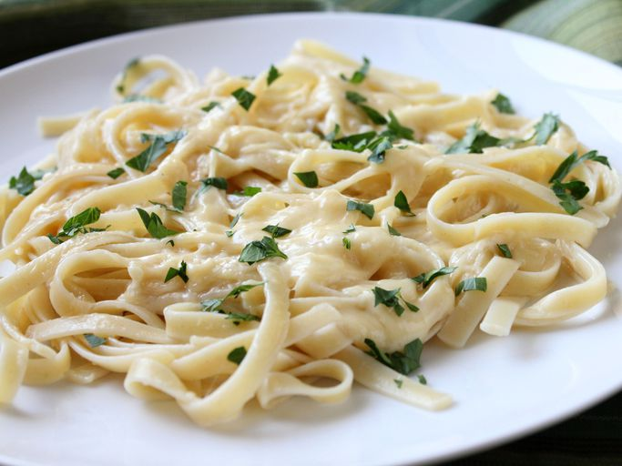

Alfredo Sauce

Description
This Alfredo sauce recipe always turns out rich and creamy with lots of garlic and Parmesan flavor! A delicious way to transform plain fettuccine pasta, roast chicken, or steamed vegetables!
Ingredients
- ¼ cup butter
- 1 cup heavy cream
- 1½ cups grated parmesan cheese
- 1 clove garlic, crushed
- ¼ cup chopped fresh parsley
Steps
- Melt butter in a medium saucepan over low heat. Stir in cream and simmer for 5 minutes.
- Add cheese and garlic; whisk continuously until heated through. Stir in parsley.
- Serve immediately and enjoy!
Home